Yazılım
Web sitesinden mobil uygulamaya, fikrinizi çalışan bir ürüne çeviriyoruz.
- Kurumsal web siteleri
- iOS ve Android uygulamaları
- macOS ve Linux masaüstü araçları
- Panel ve özel iş yazılımları
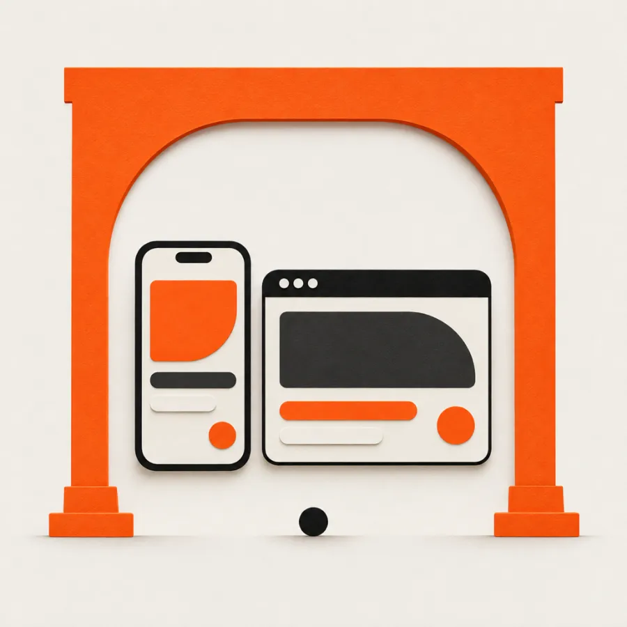
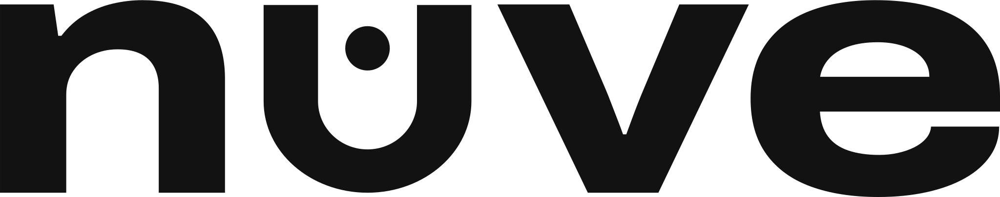
dijital YazınYazılım, dijital medya, yapay zekâ ve danışmanlık. Tek çatıda, çekirdekten başlayarak.
Her iş bir çekirdekten büyür. Biz o çekirdeği sağlam kurarız: yazılımı, içeriği, yapay zekâyı ve verdiğiniz kararları aynı çatı altında, aynı özenle.
nüve · Arapça nevât kökünden: çekirdek, öz.
Önce çekirdek. Sonra her şey.
Bir işin yazılımı, içeriği ve planı ayrı ellerde dağılmasın. Hepsini birlikte düşünüyor, birlikte teslim ediyoruz.
Web sitesinden mobil uygulamaya, fikrinizi çalışan bir ürüne çeviriyoruz.

Markanız her gönderide aynı sesle konuşsun.
Yapay zekâyı vitrin için değil, günlük işin içinde kullanın.
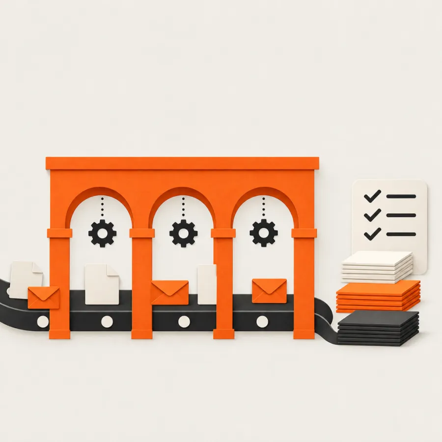
60 dakikalık bir görüşme, ardından yazılı bir yol haritası.
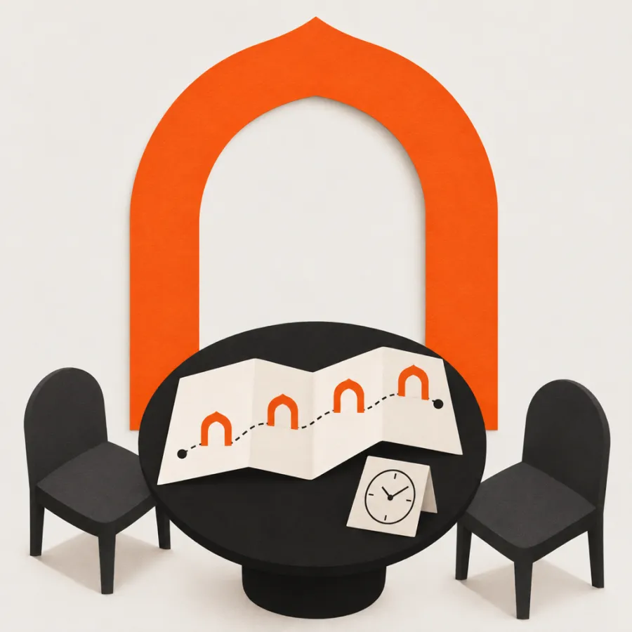
biDaha: YKS, DGS ve KPSS’ye hazırlananlar için yanlış soru defteri. Fikirden mağazaya kadar her adımı biz yaptık.
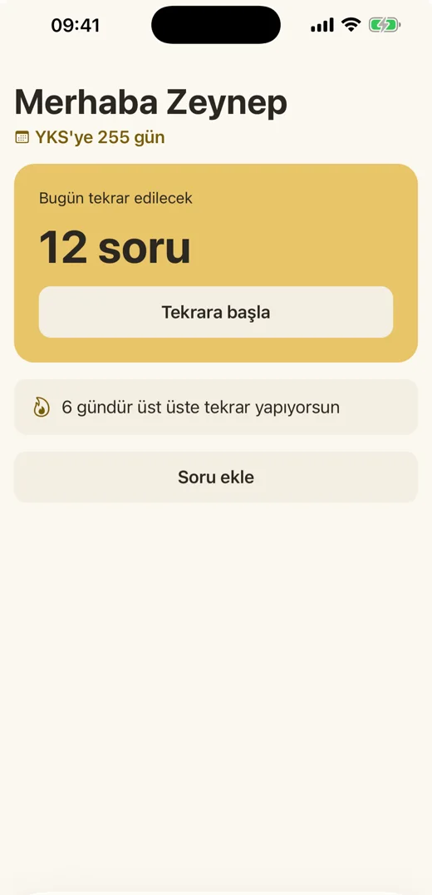
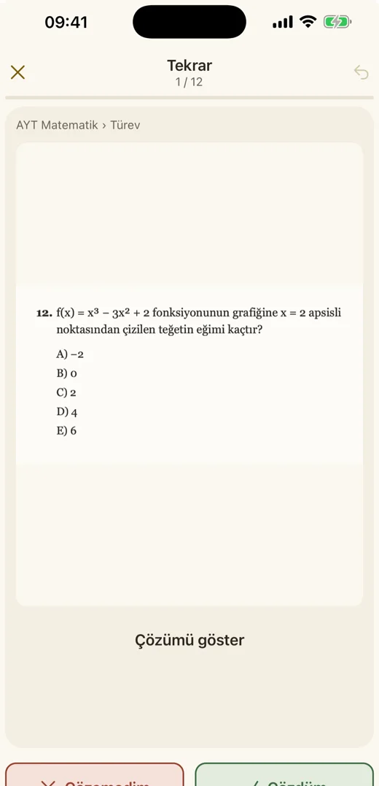
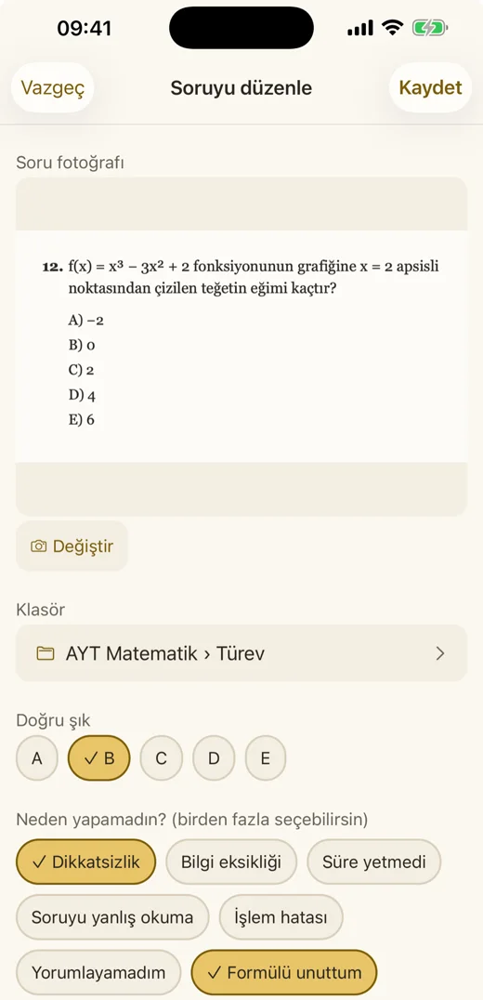
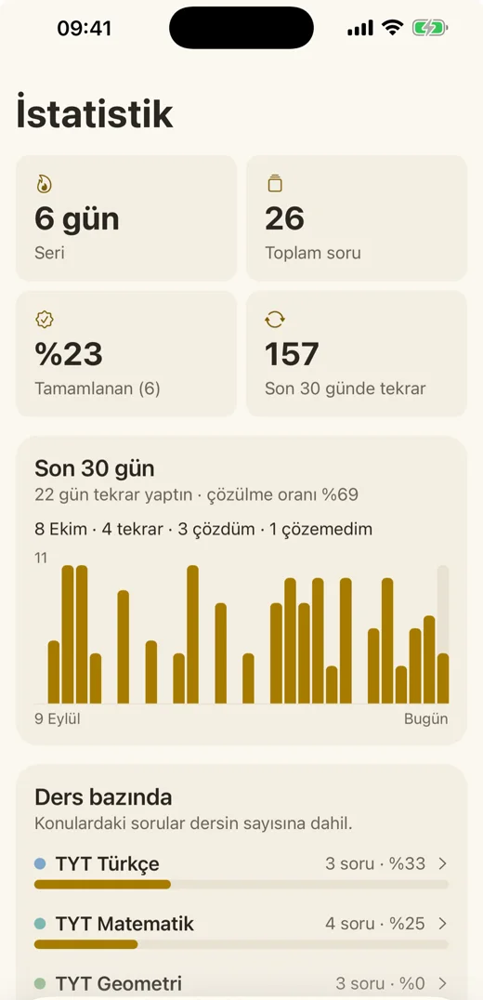
Sınav geri sayımı, bugünkü soruların ve serin tek ekranda.
Aralıklı tekrar soruyu 1, 3, 7, 14, 30 ve 60 gün sonra, tam unutmak üzereyken karşına çıkarır.
Çözemediğin soruyu kaydet; işlem hatası mı, konu eksiği mi, dikkat mi, not et.
Tüm veriler telefonda kalır. Ücretsiz, reklamsız, veri toplamaz.
Kendi ihtiyacımızdan doğan araçlar. Hepsi GitHub’da, herkesin kullanımına açık.
GitHub profili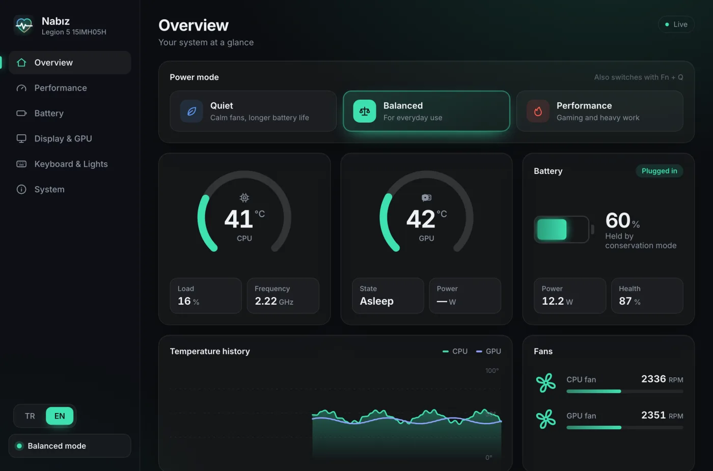
Linux dizüstüler için kontrol merkezi: güç modu, sensörler, pil bakımı, kamera ve dokunmatik yüzey ayarları.
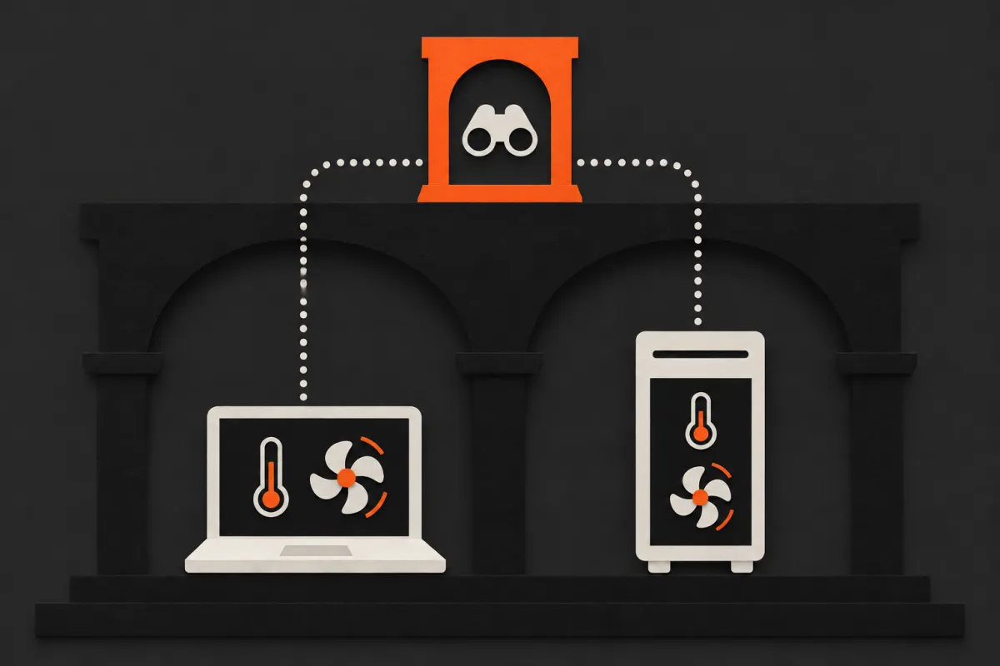
Evdeki bilgisayarları Mac’in menü çubuğundan canlı izler. Isı tehlikeliyse önce uyarır, sonra yapay zekâ işlerini durdurur.
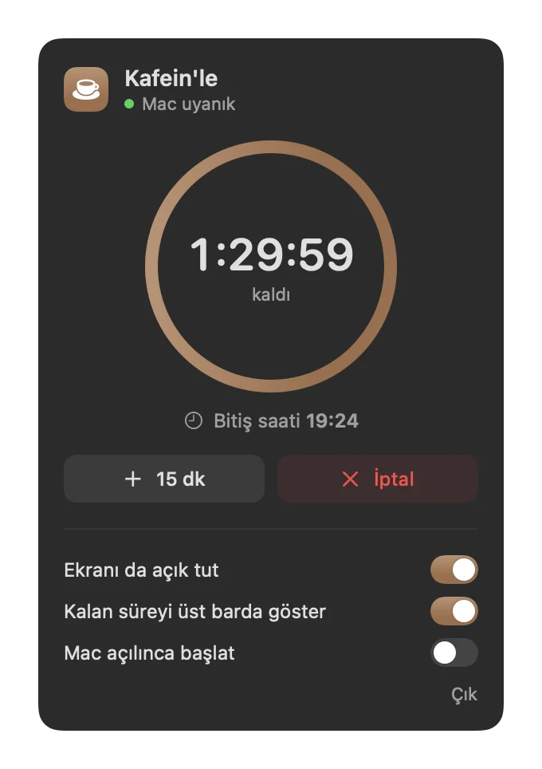
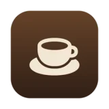
Mac’i seçtiğiniz süre boyunca uyutmayan, üst bardan çalışan sade uygulama.
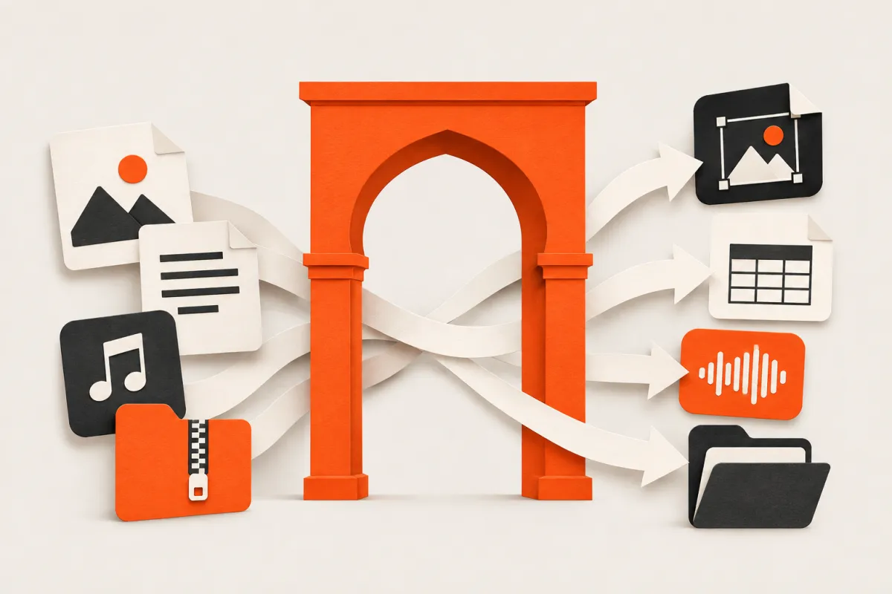
Açık kaynak dosya aracı: resim, PDF, medya ve arşiv dönüştürme; web indirme, QR okuma ve Linux masaüstü sürümü.
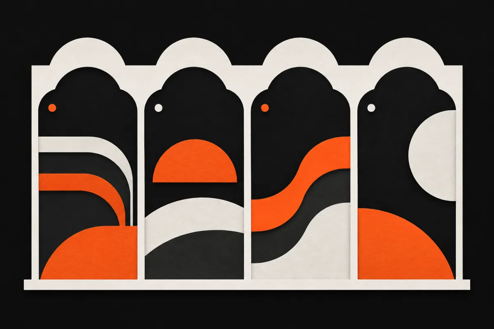
Birçok Claude Code ve Codex oturumunu yan yana çalıştıran macOS terminaline katkılar; birleştirilmiş PR’lar.
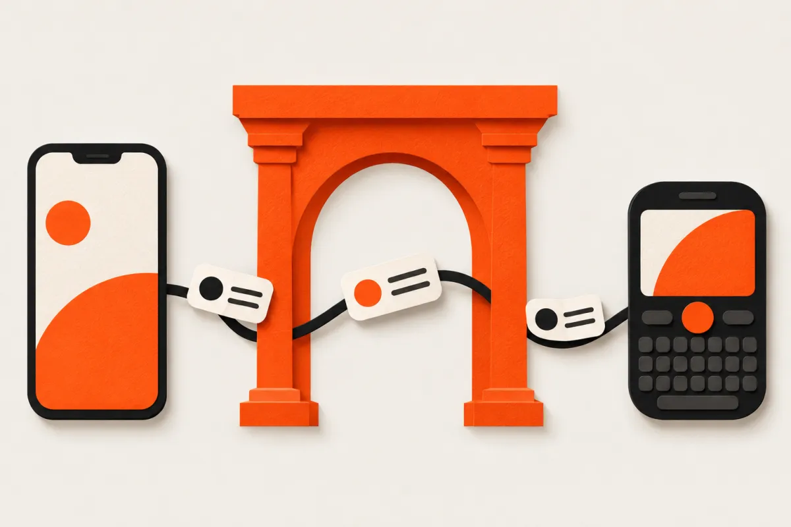
iPhone kişilerini kabloyla Nokia E6-00 rehberine aktarır. Eski cihaza yeni hayat.
İşinizi, hedefinizi ve elinizdekini dinliyoruz.
Kapsamı, takvimi ve bütçeyi yazılı hâle getiriyoruz.
Ara teslimlerle ilerliyoruz; süreci her aşamada görürsünüz.
Yayına alıyor, ekibinize devrediyor, sonrasında da yanınızda oluyoruz.
Nüve Dijital; yazılım, dijital medya, yapay zekâ ve danışmanlık işlerini tek çatı altında toplayan bir stüdyo. Küçük ekip, doğrudan iletişim, çalışan iş.
Kurucu
Yazılımcı. Matematik ve Bilgisayar Bilimleri ile Yönetim Bilişim Sistemleri üzerine eğitim aldı; hem algoritma tarafını hem işin ürün tarafını sever.
Yapay zekâyı oyuncak değil üretim aracı olarak kullanır: fikri yapay zekâ ajanlarıyla birlikte tasarlar, kodlar ve mağazaya kadar götürür. biDaha’yı App Store’a çıkardı; macOS, Linux ve mobil için açık kaynak araçlar geliştiriyor.
github.com/OguzhanKodalYazılım, içerik, yapay zekâ ya da danışmanlık. Kısaca anlatın, size dönelim.